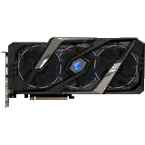
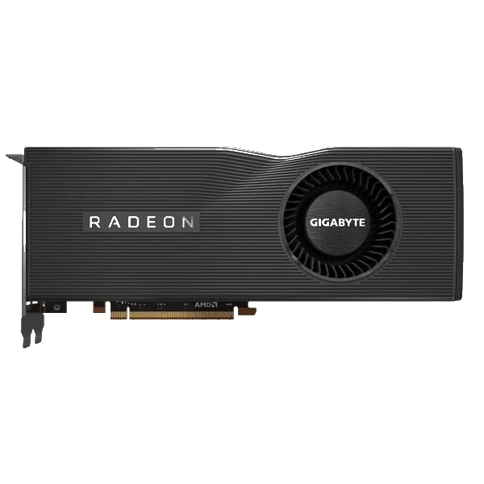

What Is GPU?
Especially important for 3D rendering, the GPU does exactly what its name suggests and processes huge batches of graphic data. You will find that your computer’s graphics card has at least one GPU. As opposed to the basic on-board graphic capabilities that PC motherboards supply, dedicated graphics cards interface with the motherboard via an expansion slot to work almost exclusively on graphic rendering. This also means you can upgrade your graphics card if you want to get a bit more performance from your PC.
Not only this, but modern GPUs fulfil a broad computational workload beyond just rendering, making them an extension to the central processing unit.
*Click Those AMD and Nvidia Icons to find out more information about that brand.

What Is Nvidia?
The company specialises in the design of graphics processing units that are used in computers.
Nvidia is known as a market leader in the design of graphics processing units, or GPUs, for the gaming market, as well as system on chips, or SOCs, for the mobile computing and automotive markets.
Narrowing its focus in 2014 to target the gaming, professional visualization, data centre and automotive markets, Nvidia was first founded in 1993.
A big coup early on for the company came after the success of the GeForce GPUs, which led to Nvidia winning a contract to develop graphics hardware for the Xbox console.
*The Photo Seeing on the above is the Nvidia's one of the powerful GPU version = RTX2070

What Is AMD?
AMD is the second largest maker of personal computer microprocessors after Intel. They also make flash memory, integrated circuits for networking devices, and programmable logic devices. AMD reports that it has sold over 100 million x86 (Windows-compatible) microprocessors. Its Athlon (formerly called the "K7") microprocessor, delivered in mid-1999, was the the first to support a 200 MHz bus. In March, 2000, AMD announced the first 1 gigahertz PC microprocessor in a new version of the Athlon.
*The Photo Seeing on the above is the AMD's one of the powerful GPU version = 5700XT